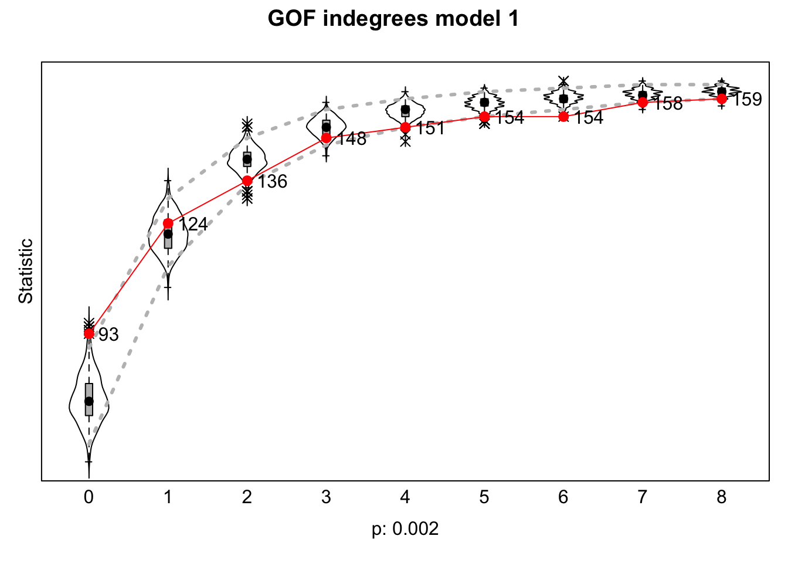
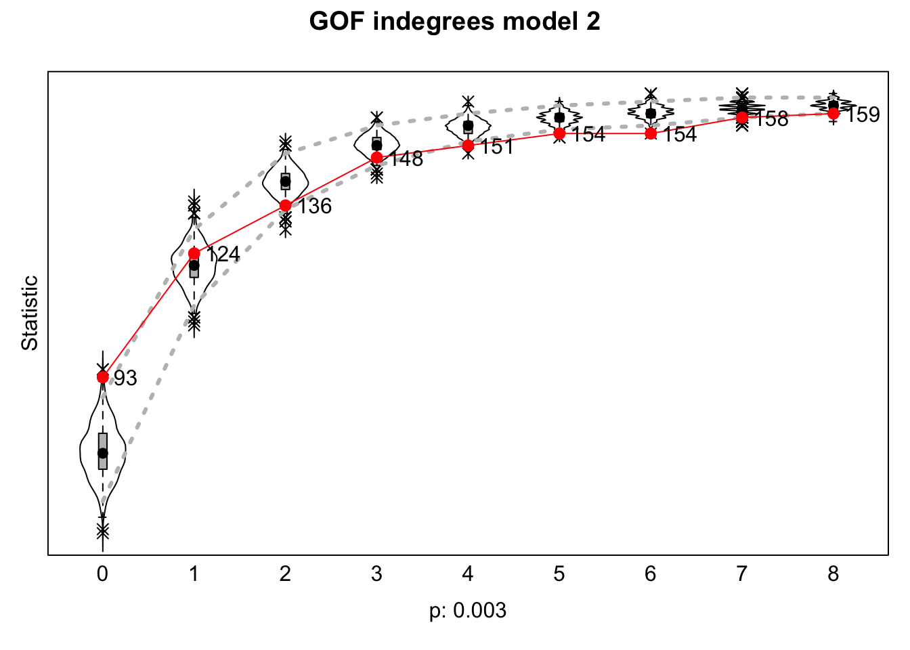
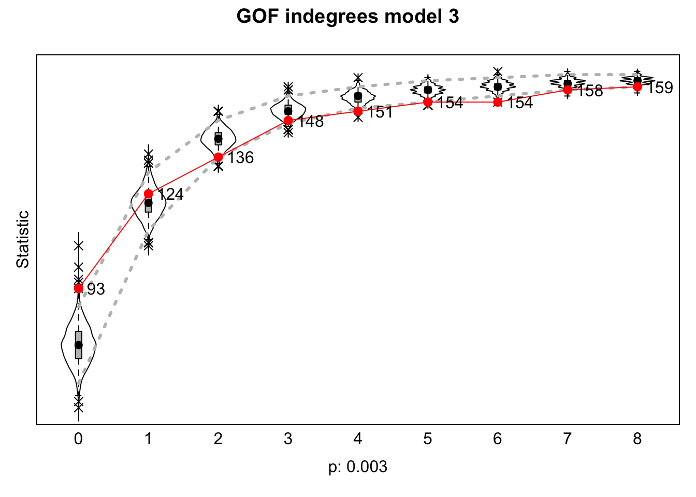
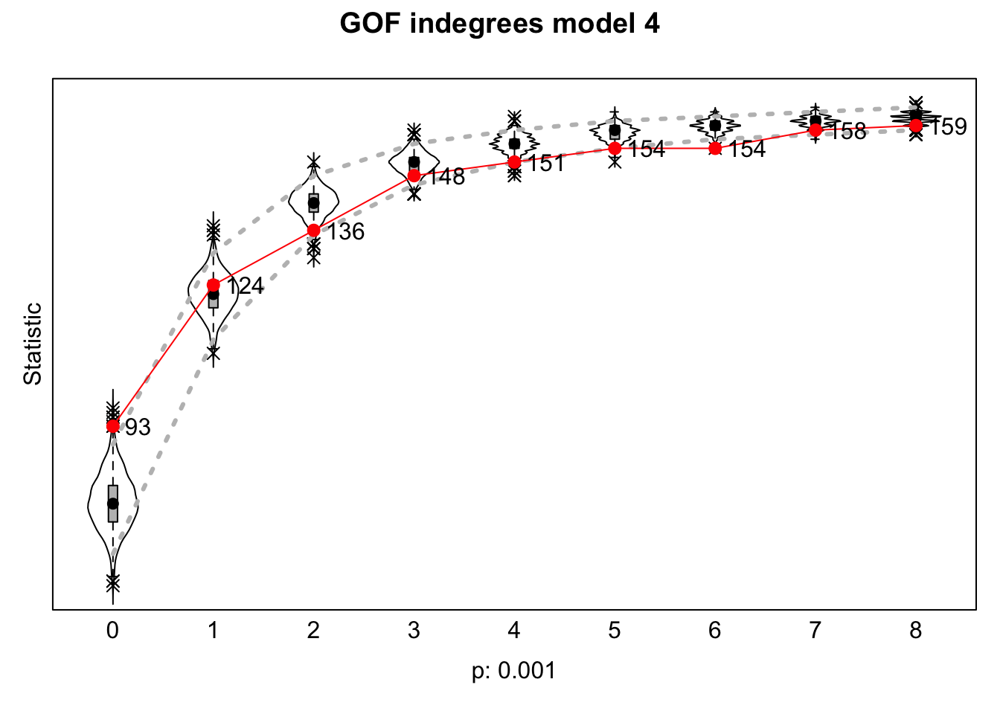
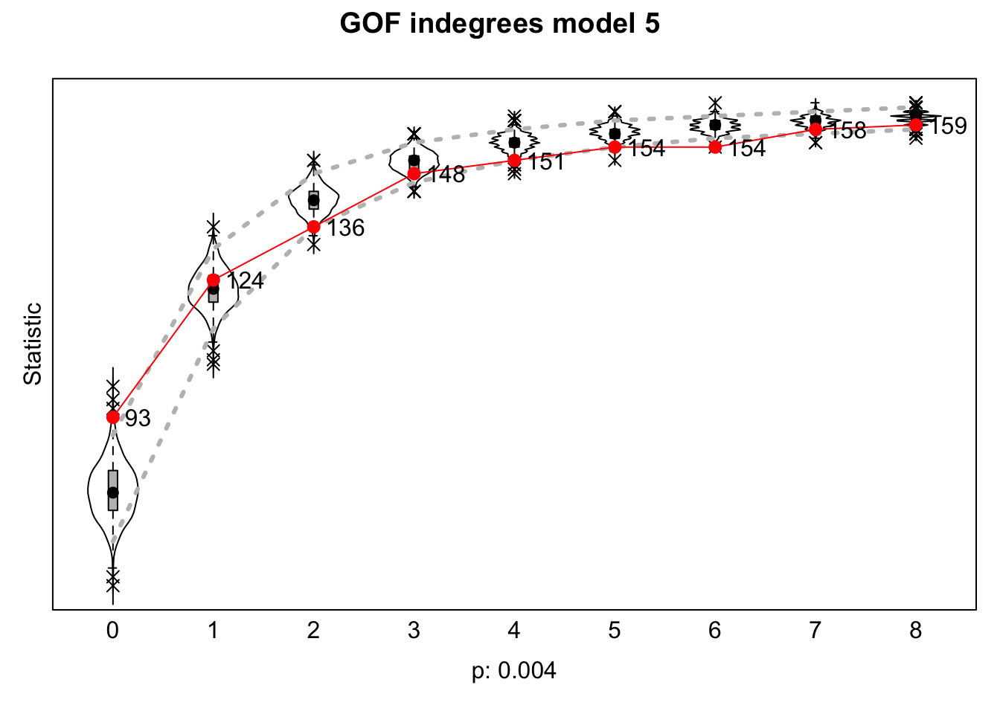

RSiena goodness of fit
(GOF)
Lastly, goodness of fit tests were performed for the five models that
were estimated. These goodness of fit (GOF) tests are important for
RSiena, since the RSiena packages uses simulation, which is prone to
errors. In a best case scenario, the simulation would match the changes
observed in the network perfectly. However, in reality this is not
always a perfect match. As such, goodness of fit tests checks if the
models accurately reflect the patterns observed in the network. As the
research questions and the hypotheses focus on the role scholars with a
high prestige play on the the structure of networks and whether they
receive ties based on their prestige, I decided to use the indegree
distribution as the metric to base the goodness of fit tests on.
For some reason that I do not know, the goodness of fits for all five
models are very bad. It may be the case that not enough variables are
added to the models, since I have only included the prestige index and
gender. It may also be the case that something went wrong with the data
preparation, but I would not know where. Possibly due to the ‘final
prep’ part where I had to do some work-arounds after the data did not
run anymore. Due to time constraints I have not had the time to find out
what exactly causes the goodness of fits to have these values. It would
take too much time to run all the data again. As such, it must be said
that based on these goodness of fits, it should be noted that the
results of this study need to be interpreted with care.
Prep
Cleaning the workspace
rm(list = ls())
Defining the functions
fpackage.check <- function(packages) {
lapply(packages, FUN = function(x) {
if (!require(x, character.only = TRUE)) {
install.packages(x, dependencies = TRUE)
library(x, character.only = TRUE)
}
})
}
fsave <- function(x, file = NULL, location = "./data/processed/") {
ifelse(!dir.exists("data"), dir.create("data"), FALSE)
ifelse(!dir.exists("data/processed"), dir.create("data/processed"), FALSE)
if (is.null(file))
file = deparse(substitute(x))
totalname <- paste(location, file, ".rda", sep = "")
save(x, file = totalname)
}
fload <- function(filename) {
load(filename)
get(ls()[ls() != "filename"])
}
fshowdf <- function(x, ...) {
knitr::kable(x, digits = 2, "html", ...) %>%
kableExtra::kable_styling(bootstrap_options = c("striped", "hover")) %>%
kableExtra::scroll_box(width = "100%", height = "300px")
}
Loading packages
packages <- c("tidyverse", "scholar", "openalexR", "rvest", "jsonlite", "RSiena", "RSelenium", "rvest",
"lavaan", "xml2", "kableExtra", "devtools", "igraph", "network", "sna", "ggraph", "visNetwork", "threejs",
"networkD3", "RsienaTwoStep", "dplyr")
fpackage.check(packages)
#> [[1]]
#> NULL
#>
#> [[2]]
#> NULL
#>
#> [[3]]
#> NULL
#>
#> [[4]]
#> NULL
#>
#> [[5]]
#> NULL
#>
#> [[6]]
#> NULL
#>
#> [[7]]
#> NULL
#>
#> [[8]]
#> NULL
#>
#> [[9]]
#> NULL
#>
#> [[10]]
#> NULL
#>
#> [[11]]
#> NULL
#>
#> [[12]]
#> NULL
#>
#> [[13]]
#> NULL
#>
#> [[14]]
#> NULL
#>
#> [[15]]
#> NULL
#>
#> [[16]]
#> NULL
#>
#> [[17]]
#> NULL
#>
#> [[18]]
#> NULL
#>
#> [[19]]
#> NULL
#>
#> [[20]]
#> NULL
#>
#> [[21]]
#> NULL
# make yourself known to openAlex
options(openalexR.mailto = "lucan.bovens@home.nl")
# Load final prepared data
df_ego <- fload("./data/processed/df_ego_final.rda")
socdata <- fload("./data/processed/socdata_final.rda")
dfworks <- fload("./data/processed/df_works_final.rda")
Model 1
ans1 <- fload("./data/processed/ans1.rda")
GOFM1 <- sienaGOF(ans1, IndegreeDistribution, verbose = FALSE, join = TRUE, varName = "net")
plot(GOFM1, main = "GOF indegrees model 1")

Model 2
ans2 <- fload("./data/processed/ans2.rda")
GOFM2 <- sienaGOF(ans2, IndegreeDistribution, verbose = FALSE, join = TRUE, varName = "net")
plot(GOFM2, main = "GOF indegrees model 2")

Model 3
ans3 <- fload("./data/processed/ans3.rda")
GOFM3 <- sienaGOF(ans3, IndegreeDistribution, verbose = FALSE, join = TRUE, varName = "net")
plot(GOFM3, main = "GOF indegrees model 3")

Model 4
ans4 <- fload("./data/processed/ans4.rda")
GOFM4 <- sienaGOF(ans4, IndegreeDistribution, verbose = FALSE, join = TRUE, varName = "net")
plot(GOFM4, main = "GOF indegrees model 4")

Model 5
ans5 <- fload("./data/processed/ans5.rda")
GOFM5 <- sienaGOF(ans5, IndegreeDistribution, verbose = FALSE, join = TRUE, varName = "net")
plot(GOFM5, main = "GOF indegrees model 5")

LS0tCnRpdGxlOiAiRmluYWwgUlNpZW5hIEdPRiIKb3V0cHV0OiBodG1sX2RvY3VtZW50CmRhdGU6ICIyMDI0LTExLTAzIgpiaWJsaW9ncmFwaHk6IHJlZmVyZW5jZXMuYmliCmF1dGhvcjogIkx1Y2FuIEJvdmVucyIKLS0tCgpgYGB7PWh0bWx9CjxzdHlsZT4KZGl2IHsKdGV4dC1hbGlnbjoganVzdGlmeX0KPC9zdHlsZT4KYGBgCiAgCmBgYHtyLCBnbG9iYWxzZXR0aW5ncywgZWNobz1GQUxTRSwgd2FybmluZz1GQUxTRSwgcmVzdWx0cz0naGlkZSd9CmxpYnJhcnkoa25pdHIpCgprbml0cjo6b3B0c19jaHVuayRzZXQoZWNobyA9IFRSVUUpCm9wdHNfY2h1bmskc2V0KHRpZHkub3B0cz1saXN0KHdpZHRoLmN1dG9mZj0xMDApLHRpZHk9VFJVRSwgd2FybmluZyA9IEZBTFNFLCBtZXNzYWdlID0gRkFMU0UsY29tbWVudCA9ICIjPiIsIGNhY2hlPVRSVUUsIGNsYXNzLnNvdXJjZT1jKCJ0ZXN0IiksIGNsYXNzLm91dHB1dD1jKCJ0ZXN0MiIpKQpvcHRpb25zKHdpZHRoID0gMTAwKQpyZ2w6OnNldHVwS25pdHIoKQoKY29sb3JpemUgPC0gZnVuY3Rpb24oeCwgY29sb3IpIHtzcHJpbnRmKCI8c3BhbiBzdHlsZT0nY29sb3I6ICVzOyc+JXM8L3NwYW4+IiwgY29sb3IsIHgpIH0KYGBgCgpgYGB7ciBrbGlwcHksIGVjaG89RkFMU0UsIGluY2x1ZGU9VFJVRX0Ka2xpcHB5OjprbGlwcHkocG9zaXRpb24gPSBjKCd0b3AnLCAncmlnaHQnKSkKI2tsaXBweTo6a2xpcHB5KGNvbG9yID0gJ2RhcmtyZWQnKQoja2xpcHB5OjprbGlwcHkodG9vbHRpcF9tZXNzYWdlID0gJ0NsaWNrIHRvIGNvcHknLCB0b29sdGlwX3N1Y2Nlc3MgPSAnRG9uZScpCmBgYAoKYGBge3Igc2V0dXAsIGluY2x1ZGU9RkFMU0V9CmtuaXRyOjpvcHRzX2NodW5rJHNldChlY2hvID0gVFJVRSkKYGBgCi0tLS0KCiMgUlNpZW5hIGdvb2RuZXNzIG9mIGZpdCAoR09GKQoKTGFzdGx5LCBnb29kbmVzcyBvZiBmaXQgdGVzdHMgd2VyZSBwZXJmb3JtZWQgZm9yIHRoZSBmaXZlIG1vZGVscyB0aGF0IHdlcmUgZXN0aW1hdGVkLiBUaGVzZSBnb29kbmVzcyBvZiBmaXQgKEdPRikgdGVzdHMgYXJlIGltcG9ydGFudCBmb3IgUlNpZW5hLCBzaW5jZSB0aGUgUlNpZW5hIHBhY2thZ2VzIHVzZXMgc2ltdWxhdGlvbiwgd2hpY2ggaXMgcHJvbmUgdG8gZXJyb3JzLiBJbiBhIGJlc3QgY2FzZSBzY2VuYXJpbywgdGhlIHNpbXVsYXRpb24gd291bGQgbWF0Y2ggdGhlIGNoYW5nZXMgb2JzZXJ2ZWQgaW4gdGhlIG5ldHdvcmsgcGVyZmVjdGx5LiBIb3dldmVyLCBpbiByZWFsaXR5IHRoaXMgaXMgbm90IGFsd2F5cyBhIHBlcmZlY3QgbWF0Y2guIEFzIHN1Y2gsIGdvb2RuZXNzIG9mIGZpdCB0ZXN0cyBjaGVja3MgaWYgdGhlIG1vZGVscyBhY2N1cmF0ZWx5IHJlZmxlY3QgdGhlIHBhdHRlcm5zIG9ic2VydmVkIGluIHRoZSBuZXR3b3JrLiBBcyB0aGUgcmVzZWFyY2ggcXVlc3Rpb25zIGFuZCB0aGUgaHlwb3RoZXNlcyBmb2N1cyBvbiB0aGUgcm9sZSBzY2hvbGFycyB3aXRoIGEgaGlnaCBwcmVzdGlnZSBwbGF5IG9uIHRoZSB0aGUgc3RydWN0dXJlIG9mIG5ldHdvcmtzIGFuZCB3aGV0aGVyIHRoZXkgcmVjZWl2ZSB0aWVzIGJhc2VkIG9uIHRoZWlyIHByZXN0aWdlLCBJIGRlY2lkZWQgdG8gdXNlIHRoZSBpbmRlZ3JlZSBkaXN0cmlidXRpb24gYXMgdGhlIG1ldHJpYyB0byBiYXNlIHRoZSBnb29kbmVzcyBvZiBmaXQgdGVzdHMgb24uIFwK4oCDICAgRm9yIHNvbWUgcmVhc29uIHRoYXQgSSBkbyBub3Qga25vdywgdGhlIGdvb2RuZXNzIG9mIGZpdHMgZm9yIGFsbCBmaXZlIG1vZGVscyBhcmUgdmVyeSBiYWQuIEl0IG1heSBiZSB0aGUgY2FzZSB0aGF0IG5vdCBlbm91Z2ggdmFyaWFibGVzIGFyZSBhZGRlZCB0byB0aGUgbW9kZWxzLCBzaW5jZSBJIGhhdmUgb25seSBpbmNsdWRlZCB0aGUgcHJlc3RpZ2UgaW5kZXggYW5kIGdlbmRlci4gSXQgbWF5IGFsc28gYmUgdGhlIGNhc2UgdGhhdCBzb21ldGhpbmcgd2VudCB3cm9uZyB3aXRoIHRoZSBkYXRhIHByZXBhcmF0aW9uLCBidXQgSSB3b3VsZCBub3Qga25vdyB3aGVyZS4gUG9zc2libHkgZHVlIHRvIHRoZSAnZmluYWwgcHJlcCcgcGFydCB3aGVyZSBJIGhhZCB0byBkbyBzb21lIHdvcmstYXJvdW5kcyBhZnRlciB0aGUgZGF0YSBkaWQgbm90IHJ1biBhbnltb3JlLiBEdWUgdG8gdGltZSBjb25zdHJhaW50cyBJIGhhdmUgbm90IGhhZCB0aGUgdGltZSB0byBmaW5kIG91dCB3aGF0IGV4YWN0bHkgY2F1c2VzIHRoZSBnb29kbmVzcyBvZiBmaXRzIHRvIGhhdmUgdGhlc2UgdmFsdWVzLiBJdCB3b3VsZCB0YWtlIHRvbyBtdWNoIHRpbWUgdG8gcnVuIGFsbCB0aGUgZGF0YSBhZ2Fpbi4gQXMgc3VjaCwgaXQgbXVzdCBiZSBzYWlkIHRoYXQgYmFzZWQgb24gdGhlc2UgZ29vZG5lc3Mgb2YgZml0cywgaXQgc2hvdWxkIGJlIG5vdGVkIHRoYXQgdGhlIHJlc3VsdHMgb2YgdGhpcyBzdHVkeSBuZWVkIHRvIGJlIGludGVycHJldGVkIHdpdGggY2FyZS4gCiAgCi0tLS0KICAKIyMgUHJlcAoKQ2xlYW5pbmcgdGhlIHdvcmtzcGFjZQoKYGBge3J9CnJtKGxpc3Q9bHMoKSkKYGBgCgpEZWZpbmluZyB0aGUgZnVuY3Rpb25zCgpgYGB7cn0KZnBhY2thZ2UuY2hlY2sgPC0gZnVuY3Rpb24ocGFja2FnZXMpIHsKICAgIGxhcHBseShwYWNrYWdlcywgRlVOID0gZnVuY3Rpb24oeCkgewogICAgICAgIGlmICghcmVxdWlyZSh4LCBjaGFyYWN0ZXIub25seSA9IFRSVUUpKSB7CiAgICAgICAgICAgIGluc3RhbGwucGFja2FnZXMoeCwgZGVwZW5kZW5jaWVzID0gVFJVRSkKICAgICAgICAgICAgbGlicmFyeSh4LCBjaGFyYWN0ZXIub25seSA9IFRSVUUpCiAgICAgICAgfQogICAgfSkKfQoKZnNhdmUgPC0gZnVuY3Rpb24oeCwgZmlsZSA9IE5VTEwsIGxvY2F0aW9uID0gIi4vZGF0YS9wcm9jZXNzZWQvIikgewogICAgaWZlbHNlKCFkaXIuZXhpc3RzKCJkYXRhIiksIGRpci5jcmVhdGUoImRhdGEiKSwgRkFMU0UpCiAgICBpZmVsc2UoIWRpci5leGlzdHMoImRhdGEvcHJvY2Vzc2VkIiksIGRpci5jcmVhdGUoImRhdGEvcHJvY2Vzc2VkIiksIEZBTFNFKQogICAgaWYgKGlzLm51bGwoZmlsZSkpCiAgICAgICAgZmlsZSA9IGRlcGFyc2Uoc3Vic3RpdHV0ZSh4KSkKICAgIHRvdGFsbmFtZSA8LSBwYXN0ZShsb2NhdGlvbiwgZmlsZSwgIi5yZGEiLCBzZXAgPSAiIikKICAgIHNhdmUoeCwgZmlsZSA9IHRvdGFsbmFtZSkKfQoKCmZsb2FkIDwtIGZ1bmN0aW9uKGZpbGVuYW1lKSB7CiAgICBsb2FkKGZpbGVuYW1lKQogICAgZ2V0KGxzKClbbHMoKSAhPSAiZmlsZW5hbWUiXSkKfQoKZnNob3dkZiA8LSBmdW5jdGlvbih4LCAuLi4pIHsKICAgIGtuaXRyOjprYWJsZSh4LCBkaWdpdHMgPSAyLCAiaHRtbCIsIC4uLikgJT4lCiAgICAgICAga2FibGVFeHRyYTo6a2FibGVfc3R5bGluZyhib290c3RyYXBfb3B0aW9ucyA9IGMoInN0cmlwZWQiLCAiaG92ZXIiKSkgJT4lCiAgICAgICAga2FibGVFeHRyYTo6c2Nyb2xsX2JveCh3aWR0aCA9ICIxMDAlIiwgaGVpZ2h0ID0gIjMwMHB4IikKfQpgYGAKCkxvYWRpbmcgcGFja2FnZXMKCmBgYHtyfQpwYWNrYWdlcyA8LSBjKCJ0aWR5dmVyc2UiLCAic2Nob2xhciIsICJvcGVuYWxleFIiLCAicnZlc3QiLCAianNvbmxpdGUiLCAiUlNpZW5hIiwgIlJTZWxlbml1bSIsICJydmVzdCIsICJsYXZhYW4iLCAieG1sMiIsICJrYWJsZUV4dHJhIiwgImRldnRvb2xzIiwgImlncmFwaCIsICJuZXR3b3JrIiwgInNuYSIsICJnZ3JhcGgiLCAidmlzTmV0d29yayIsICJ0aHJlZWpzIiwgIm5ldHdvcmtEMyIsICJSc2llbmFUd29TdGVwIiwgImRwbHlyIikKCgpmcGFja2FnZS5jaGVjayhwYWNrYWdlcykKYGBgCgpgYGB7cn0KIyBtYWtlIHlvdXJzZWxmIGtub3duIHRvIG9wZW5BbGV4Cm9wdGlvbnMob3BlbmFsZXhSLm1haWx0byA9ICJsdWNhbi5ib3ZlbnNAaG9tZS5ubCIpCmBgYAoKYGBge3J9CiMgTG9hZCBmaW5hbCBwcmVwYXJlZCBkYXRhCmRmX2VnbyA8LSBmbG9hZCgiLi9kYXRhL3Byb2Nlc3NlZC9kZl9lZ29fZmluYWwucmRhIikKc29jZGF0YSA8LSBmbG9hZCgiLi9kYXRhL3Byb2Nlc3NlZC9zb2NkYXRhX2ZpbmFsLnJkYSIpCmRmd29ya3MgPC0gZmxvYWQoIi4vZGF0YS9wcm9jZXNzZWQvZGZfd29ya3NfZmluYWwucmRhIikKYGBgCgojIyBNb2RlbCAxCgpgYGB7cn0KYW5zMSA8LSBmbG9hZCgiLi9kYXRhL3Byb2Nlc3NlZC9hbnMxLnJkYSIpCmBgYAoKYGBge3J9CkdPRk0xIDwtIHNpZW5hR09GKGFuczEsIEluZGVncmVlRGlzdHJpYnV0aW9uLCB2ZXJib3NlID0gRkFMU0UsIGpvaW4gPSBUUlVFLCB2YXJOYW1lID0gIm5ldCIpCgpwbG90KEdPRk0xLCBtYWluID0gIkdPRiBpbmRlZ3JlZXMgbW9kZWwgMSIpCgpgYGAKCiMjIE1vZGVsIDIKCmBgYHtyfQphbnMyIDwtIGZsb2FkKCIuL2RhdGEvcHJvY2Vzc2VkL2FuczIucmRhIikKYGBgCgpgYGB7cn0KCkdPRk0yIDwtIHNpZW5hR09GKGFuczIsIEluZGVncmVlRGlzdHJpYnV0aW9uLCB2ZXJib3NlID0gRkFMU0UsIGpvaW4gPSBUUlVFLCB2YXJOYW1lID0gIm5ldCIpCgpwbG90KEdPRk0yLCBtYWluID0gIkdPRiBpbmRlZ3JlZXMgbW9kZWwgMiIpCgpgYGAKCiMjIE1vZGVsIDMKCmBgYHtyfQphbnMzIDwtIGZsb2FkKCIuL2RhdGEvcHJvY2Vzc2VkL2FuczMucmRhIikKYGBgCgpgYGB7cn0KCkdPRk0zIDwtIHNpZW5hR09GKGFuczMsIEluZGVncmVlRGlzdHJpYnV0aW9uLCB2ZXJib3NlID0gRkFMU0UsIGpvaW4gPSBUUlVFLCB2YXJOYW1lID0gIm5ldCIpCgpwbG90KEdPRk0zLCBtYWluID0gIkdPRiBpbmRlZ3JlZXMgbW9kZWwgMyIpCgpgYGAKCiMjIE1vZGVsIDQKCmBgYHtyfQphbnM0IDwtIGZsb2FkKCIuL2RhdGEvcHJvY2Vzc2VkL2FuczQucmRhIikKYGBgCgpgYGB7cn0KCkdPRk00IDwtIHNpZW5hR09GKGFuczQsIEluZGVncmVlRGlzdHJpYnV0aW9uLCB2ZXJib3NlID0gRkFMU0UsIGpvaW4gPSBUUlVFLCB2YXJOYW1lID0gIm5ldCIpCgpwbG90KEdPRk00LCBtYWluID0gIkdPRiBpbmRlZ3JlZXMgbW9kZWwgNCIpCgpgYGAKCiMjIE1vZGVsIDUKCmBgYHtyfQphbnM1IDwtIGZsb2FkKCIuL2RhdGEvcHJvY2Vzc2VkL2FuczUucmRhIikKYGBgCgpgYGB7cn0KCkdPRk01IDwtIHNpZW5hR09GKGFuczUsIEluZGVncmVlRGlzdHJpYnV0aW9uLCB2ZXJib3NlID0gRkFMU0UsIGpvaW4gPSBUUlVFLCB2YXJOYW1lID0gIm5ldCIpCgpwbG90KEdPRk01LCBtYWluID0gIkdPRiBpbmRlZ3JlZXMgbW9kZWwgNSIpCgpgYGAKCg==